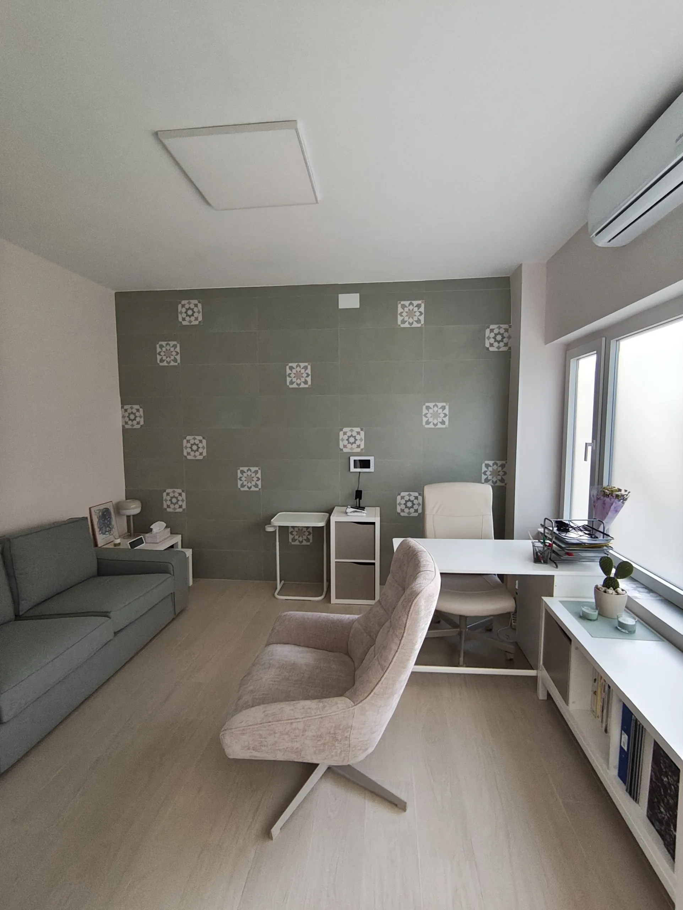
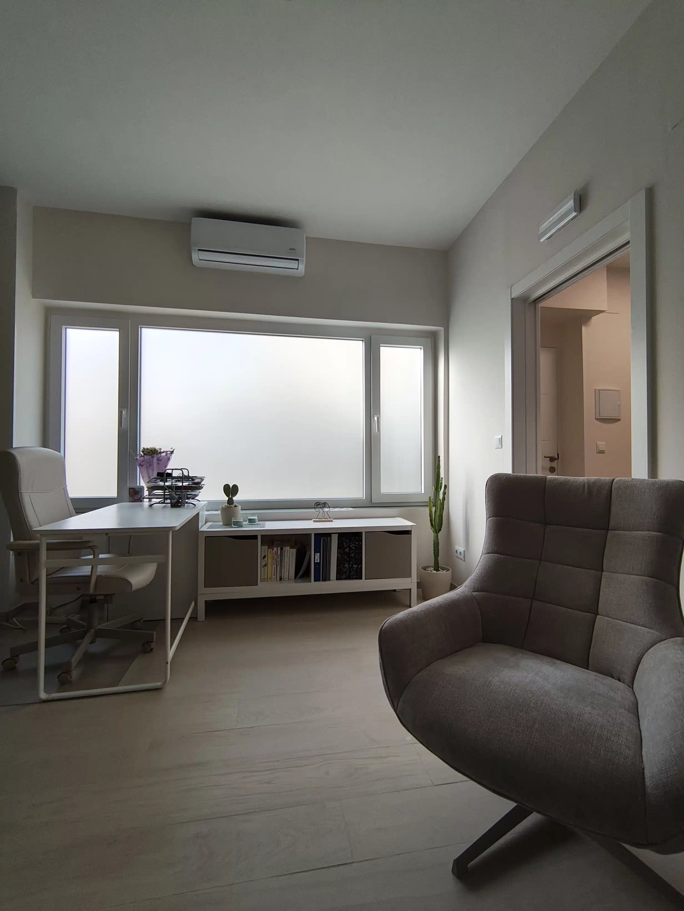
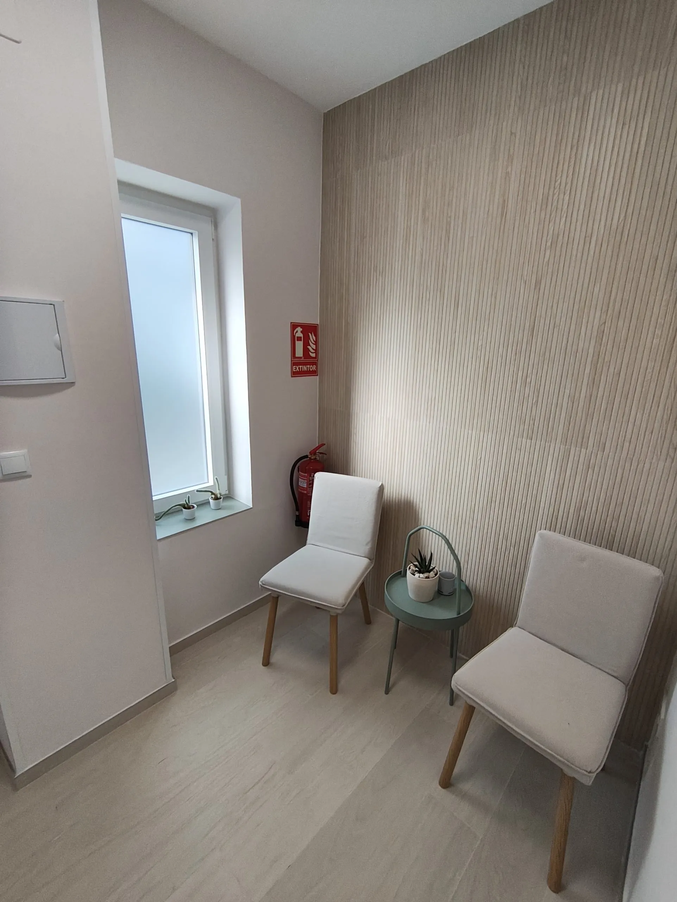
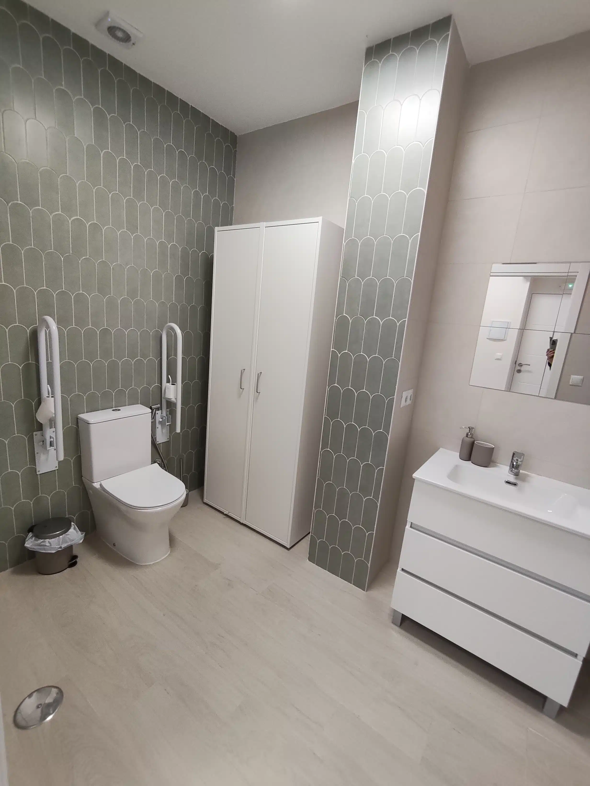

Ansiedad y preocupaciones
Cuando tu mente no para, anticipas que algo irá mal o te cuesta desconectar incluso cuando todo parece estar bien.
Presencial en Sevilla · Terapia online
Soy Miguel Ángel, psicólogo especializado en terapia con personas adultas, parejas y familias. Te acompaño con cercanía y estrategias psicológicas contrastadas.
Google 5,0 Más de 95 opiniones Ver reseñas
Quizá has llegado hasta aquí porque…
Le das demasiadas vueltas a las cosas y te cuesta desconectar.
Sientes que algo tiene que cambiar, pero no sabes por dónde empezar.
Quieres cuidar una relación importante sin seguir repitiendo lo mismo.
¿En qué puedo ayudarte?
No necesitas tenerlo todo claro para pedir ayuda. Podemos empezar poniendo nombre a lo que ocurre y comprendiendo qué necesitas cambiar.
Cuando tu mente no para, anticipas que algo irá mal o te cuesta desconectar incluso cuando todo parece estar bien.
Cuando llevas demasiado tiempo sosteniendo responsabilidades y notas que cada vez tienes menos energía para ti.
Cuando te juzgas con dureza, dudas constantemente de ti o sientes que nunca es suficiente lo que haces.
Cuando los mismos conflictos se repiten, cuesta expresar lo que necesitas o una relación importante se está desgastando.
Cuando atraviesas una ruptura, un duelo o una etapa nueva y necesitas recuperar dirección y estabilidad.
Cuando la convivencia se ha vuelto difícil y necesitáis comprender lo que ocurre para recuperar el diálogo.
Te orientamos en menos de un minuto
Elige la opción que más se acerque a tu situación. No es un diagnóstico: solo una forma sencilla de ayudarte a encontrar el mejor punto de partida.
Sin formularios ni datos personales. Tu elección no se guarda ni se envía.
Orientación inicial
Por qué trabajar conmigo
Mi forma de trabajar combina cercanía y claridad. Construimos un espacio seguro para comprender lo que te pasa, pero también una dirección concreta para que el proceso tenga sentido en tu vida.
Empezamos entendiendo qué está ocurriendo y qué quieres cambiar, sin perder el proceso en explicaciones abstractas.
Definimos juntos una dirección realista y revisamos el proceso para que puedas identificar tus avances y necesidades.
La terapia no termina al salir de consulta: buscamos aprendizajes que puedas aplicar en tus decisiones, emociones y relaciones.
Un trato humano y sin juicios, unido a estrategias psicológicas contrastadas y adaptadas a tu situación.
Formas de acompañarte
El primer paso es comprender qué está ocurriendo. A partir de ahí definimos juntos objetivos claros y un proceso que tenga sentido para ti.
Puede ayudarte siQuieres entender qué te está pasando.
Un espacio propio para comprender emociones y patrones, y desarrollar nuevas formas de relacionarte contigo y con tu vida.
Puede ayudaros siOs sentís atrapados en las mismas discusiones.
Para mejorar la comunicación, comprender los conflictos y decidir cómo construir una relación más consciente.
Puede ayudaros siNecesitáis volver a escucharos.
Un contexto seguro para abordar dificultades compartidas, recuperar el diálogo y cuidar los vínculos familiares.
Puede ayudarte siQuieres llegar preparado a una entrevista exigente.
Preparación especializada para afrontar la entrevista personal con claridad, confianza y una estrategia realista.
Empezar, paso a paso
No necesitas decidirlo todo antes de contactar. La primera conversación también sirve para orientarte.
Tarifas y modalidades
Elige la modalidad que mejor se adapte a tu situación. Todas las sesiones incluyen una atención personalizada y objetivos acordados contigo.
Terapia individual
Terapia de pareja
Terapia familiar
Una opción cómoda y confidencial para realizar las sesiones desde un lugar tranquilo, sin necesidad de desplazarte.
Consultar disponibilidad onlineLa consulta
Conocer el lugar antes de venir también ayuda. La consulta está preparada para ofrecer un entorno cómodo, privado y accesible en Nervión.




Consulta presencial en Sevilla
Consulta presencial en el barrio de Nervión, con la ubicación completa disponible para que puedas organizar tu llegada antes de la cita.
Transporte públicoParadas en Ramón y Cajal y San Francisco Javier a pocos minutos. La estación de San Bernardo conecta con Metro L1 y Cercanías.
Si vienes en cocheHay estacionamiento regulado en el entorno de San Francisco Javier y aparcamientos públicos en las zonas de Viapol y San Bernardo.
AccesibilidadLa ficha pública indica acceso para silla de ruedas. Si necesitas asegurar condiciones concretas, consúltalas antes de acudir.
Empezar es sencillo
Selecciona terapia presencial en Sevilla o terapia online.
Consulta la agenda disponible y escoge el momento que mejor te venga.
En la primera sesión exploramos qué necesitas y cómo puedo ayudarte.

Sobre mí
Soy Miguel Ángel Roldán. Llevo más de diez años acompañando a personas que quieren entender lo que les ocurre y realizar cambios duraderos en su vida.
Mi trabajo busca crear un contexto seguro, sin juicios, donde puedas expresarte con libertad y convertir lo que hoy te bloquea en decisiones más conscientes.
“No se trata de eliminar todo lo que incomoda, sino de aprender a avanzar sin dejar que eso decida por ti.”
Opiniones
“He vivido con Miguel Ángel un proceso terapéutico maravilloso.”
Fran L. · Reseña pública en Google“Sentí un ambiente de confianza que me hizo mucho más fácil el proceso.”
Isabel A. · Reseña pública en Google“Mi vida ha dado un cambio radical.”
Inma S. · Reseña pública en GoogleFragmentos breves de reseñas públicas. Consulta los textos completos y todas las opiniones en Google.
Reserva online
Consulta la disponibilidad actual y reserva directamente. El proceso es sencillo y recibirás la confirmación de Calendly por correo electrónico.
¿Prefieres preguntar antes? Escríbeme por WhatsApp.
En Instagram
Ideas breves para comprender mejor nuestros pensamientos, emociones y relaciones.
Seguir @psicologo_mrAntes de empezar
Resolver algunas dudas antes de la primera cita también forma parte de sentirte acompañado.
Sí. Puedes realizar las sesiones presencialmente en Sevilla o conectarte online desde un lugar privado.
Hablaremos de lo que te trae a consulta, tu contexto y lo que quieres conseguir. También podrás resolver dudas y valorar si te sientes cómodo con el proceso.
La información compartida durante la terapia se trata de forma confidencial dentro del marco legal y deontológico aplicable. Antes de empezar podrás conocer cómo se protegen tus datos y cuáles son los límites profesionales de la confidencialidad.
Las sesiones reservadas mediante la agenda actual tienen una duración aproximada de 60 minutos.
La frecuencia se acuerda según tus necesidades, objetivos y disponibilidad. En la primera sesión podremos valorar qué ritmo puede encajar mejor contigo.
La confirmación de Calendly permite gestionar la cita. Miguel Ángel te indicará el plazo y las condiciones aplicables para cualquier cambio o cancelación.
Cuando estés preparado